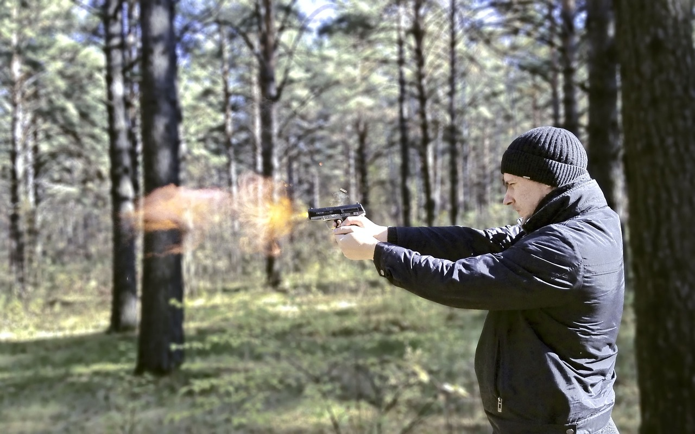

What are shooting games?
This website explores the impact of shooting games on players, focusing on both positive and negative effects. It covers various aspects, including cognitive benefits like improved reaction times, problem solving skills, and hand-eye coordination. However, it also addresses potential negative effects, such as increased aggression, desensitization to violence, and possible addiction. The site emphasizes the importance of moderation, parental guidance, and understanding age-appropriate content. It aims to provide a balanced view, highlighting the need for responsible gaming while recognizing the potential benefits these games can offer.
nec neque sed tortor semper fringilla. Nam aliquam leo arcu, sed faucibus sem ullamcorper sed. Fusce vulputate sit amet nisi in convallis. Nullam finibus elit urna, quis sollicitudin quam convallis ut. Nunc fermentum nisi finibus magna pretium venenatis. Cras quis dui dui. Vestibulum id fermentum diam. Nullam et pharetra odio. Nam nec metus orci. Suspendisse dapibus elit nec velit malesuada, vel pretium risus sollicitudin.
Aenean egestas at tellus vitae consequat. Pellentesque maximus varius dapibus. Maecenas congue sem orci, vitae aliquet mauris vulputate vel. Cras ac sapien pulvinar, hendrerit leo sagittis, euismod ligula. Proin nibh tortor, venenatis nec lorem vitae, faucibus placerat arcu. In cursus risus at mi venenatis, id luctus magna sodales. Vivamus nec erat eros. Etiam venenatis sapien justo, quis eleifend risus sagittis id. Fusce urna justo, finibus vel neque ut, rutrum semper neque. Cras et ipsum et diam bibendum aliquam. Vestibulum auctor purus nec lorem pretium porta. Sed blandit enim nec eleifend sollicitudin. Nam commodo mattis orci vel sagittis.
